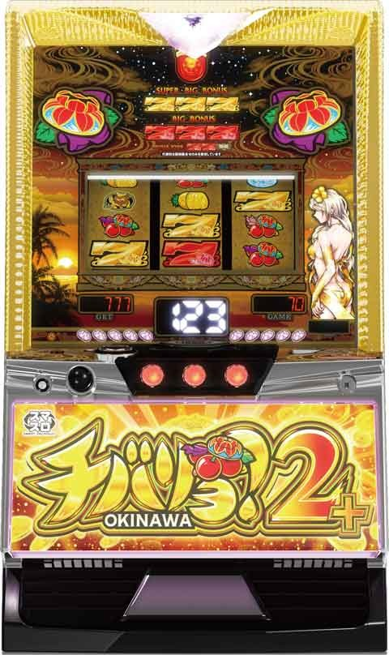
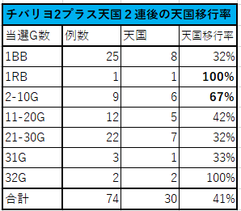
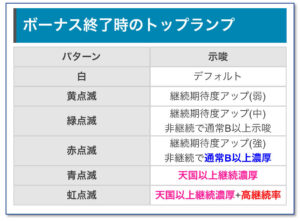
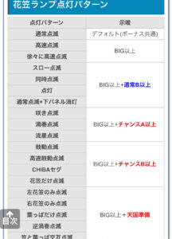
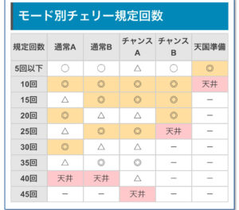
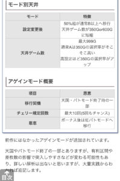
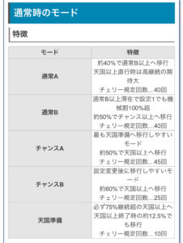

Lチバリヨ2プラス

【天井情報】
990G+α
設定変更後 600Gに短縮
チェリー回数天井 45回
【リセット判別】
リセット時は3回目のチェリーまで単チェの出現率アップ
【有利区間について】
前作同様１５連以上でリミットレスモード突入で良さそう
有利区間切れ条件 １５連以上または虹パト突入で有利切れ？
狙い目
【リセット狙い】
30Gから 360Gまで
【ボーナス間天井狙い】
850Gから（天国0～2スルー想定）
【仮天井ゾーン狙い】
期待値表上から想定される狙い目です。実際の期待値稼働とは乖離した狙い目になる可能性高いです。
※360Gまで回す想定。実際は前作同様5の倍数のチェリー踏んでから前兆確認してやめる事になりそう。
0スルー 100Gから
※10チェまでが良さそう？
1スルー 250Gから
2スルー 250Gから
3スルー 210Gから
4スルー以降 150Gから
【リミットレス後、虹パト後、アゲインモード後】
原則、天国当選まで
リミレス後は閉店まで残り4時間以内は10チェまで
アゲインモードは確定時は天国まで
【有利区間切れ狙い】
差枚+1300枚以上 10チェまで
【天国2連後狙い】
無印チバリヨ同様に天国2連後はモードが優遇されてそう。
実践上リセット後やリミットレスモード後の方が遭遇するケースが多そう。
10G以内当選後（BB1G連は除く）は10チェまたは15チェまで打てそう。
積極派は11-20G当選後も10チェまで打ってモードB以上の示唆で押し引き。

やめ時
ボーナス終了後32G回してやめ。
重要！！
打つ時は必ず注意して確認
【有利切れ時の挙動】
ボーナス後32Gは外枠がふわふわ点灯していて、32G打ち終わると通常に戻ります。
チェリーは擬似遊戯のため店データ機でカウントされず、1回引いた場合は店データ機31Gで通常に戻ります。
これが矛盾(1G遅れて通常戻る)した場合は直近で有利切れしているので、実質リミットレスモード後と同様の状況です。
天国抜け後はリミットレスモードに行かなくても有利切れするケースがあるため(頻度は不明)、自分の台は勿論、周りの台も気にした方が良いです。
その他





参考元
基本情報
- メーカー: ネット
- 機械割: 97.3% 〜 114.9%
- 導入開始日: 2024年03月04日（月）
- ゲーム性概要: 基本的なゲーム性はこれまでと共通で、毎ゲームの抽選やチェリー回数天井到達などでボーナスに当選する。 ボーナスはスーパーBIG、BIG、REGの3種類あり、消化中はBIG以上の1G連を抽選。スーパーBIGは通常時なら通常B以上、連チャン中は上位モードの可能性が高まるというモード示唆要素も兼ねている。 天国（65%・75%・80%）、赤パトモード（88%）、虹パトモード（92%）へ移行すれば32G以内のボーナス確定。虹パトモード後に必ず移行するリミットレスモードはボーナスが88%でループかつ、ボーナスごとに有利区間がリセット、さらにボーナス当選時の約15%で虹パトモードへ移行するため超強力だ。


打ち方
打ち方・小役
打ち方（小役狙い）
［最初に狙う絵柄］

左リール上段付近にBARを目押し。スイカ停止時以外は中＆右リールフリー打ちでOKだ。 センターに揃うベルが共通ベルとなる。
［スイカ停止時］

中リールのみスイカを目押し。右リールはフリー打ちで問題ない。
［擬似遊技時のチェリー停止形］

中段チェリーもアリ！
解析情報通常時
小役関連
小役確率
| 設定 | 押し順8枚ベル | 押し順12枚ベル | リプレイ |
|---|---|---|---|
| 1 | 1/1.64 | 1/7.80 | 1/7.30 |
| 2 | 1/1.64 | 調査中 | 1/7.30 |
| 4 | 1/1.64 | 調査中 | 1/7.30 |
| 5 | 1/1.64 | 調査中 | 1/7.30 |
| 6 | 1/1.64 | 調査中 | 1/7.30 |
| 設定 | 3枚役 | 共通ベル | スイカ |
| 1 | 1/12.01 | 1/32.19 | 1/79.73 |
| 2 | 1/12.01 | 調査中 | 1/79.73 |
| 4 | 1/12.01 | 調査中 | 1/79.73 |
| 5 | 1/12.01 | 調査中 | 1/79.73 |
| 6 | 1/12.01 | 調査中 | 1/79.73 |
チェリー実質確率（すべて擬似遊技）
| 役 | 通常時 | 前兆中 |
|---|---|---|
| 弱チェリー | 1/22.2 | 1/5.8 |
| 強チェリー | 1/1033.6 | 1/54.3 |
| 合算 | 1/21.7 | 1/5.2 |
チェリー概要
今回もチェリーは擬似遊技でのみ出現。成立役に応じて弱＆強チェリーが抽選され、 共通ベル後の出現率が最も高い 。ボーナス前兆中はチェリーの出現率が大幅にアップするのもポイントだ。
おもに チェリー回数天井 と、チェリー出現時の 直撃抽選 で目指す流れとなる。
また、チェリー停止時のリールアクションでボーナス期待度が変化。通常時はスベリ経由のチェリー→ボーナス非当選で通常B以上滞在濃厚といったモード示唆の役割も備えている。
［通常時］各役成立時のチェリー出現率
| 役 | 弱チェリー | 強チェリー | 合算 |
|---|---|---|---|
| 押し順ベル | 3.0% | 0.05% | 3.05% |
| リプレイ | 2.8% | 0.05% | 2.85% |
| 3枚役 | 3.0% | 0.05% | 3.05% |
| 共通ベル | 50.0% | 0.32% | 50.32% |
| スイカ | － | 3.13% | 3.13% |
［前兆中］各役成立時のチェリー出現率
| 役 | 弱チェリー | 強チェリー | 合算 |
|---|---|---|---|
| 押し順ベル | 14.5% | 0.5% | 15.0% |
| リプレイ | 14.8% | 0.5% | 15.3% |
| 3枚役 | 14.8% | 0.5% | 15.3% |
| 共通ベル | 52.5% | 1.4% | 53.9% |
| スイカ | 9.3% | 6.5% | 15.8% |
［振動チェリー］ボーナス当選期待度
| 滞在モード | 弱チェリー | 強チェリー | ||
|---|---|---|---|---|
| 滞在モード | 強振動 | 最強振動 | 強振動 | 最強振動 |
| 通常A | 50%超 | 100% | 90%超 | 100% |
| 通常B | 50%超 | 100% | 90%超 | 100% |
| 天国準備 | 50%超 | 100% | 90%超 | 100% |
| リミットレス | 94.4% | 100% | 99.7% | 100% |
| 天国 | 95%超 | 100% | 99%超 | 100% |
| 赤パト | 95%超 | 100% | 99%超 | 100% |
| 虹パト | 99.9% | 100% | 100% | 100% |
強振動はREG＜BIG＜スーパーBIGの順に期待でき、最強振動はスーパーBIGの期待大となる。
［スベリチェリー］ボーナス当選期待度
| 滞在モード | 弱チェリー | 強チェリー | ||
|---|---|---|---|---|
| 滞在モード | 小スベリ | 大スベリ | 小スベリ | 大スベリ |
| 通常A | 100% | 100% | 100% | 100% |
| 通常B | 55%超 | 100% | 90%超 | 100% |
| 天国準備 | 55%超 | 100% | 90%超 | 100% |
| リミットレス | 97.0% | 100% | 99.6% | 100% |
| 天国 | 95%超 | 100% | 99%超 | 100% |
| 赤パト | 95%超 | 100% | 99%超 | 100% |
| 虹パト | 99.9% | 100% | 100% | 100% |
※小スベリは枠内でチェリーがスベるパターン
大スベリの発生回数別示唆
| 発生回数 | 示唆 |
|---|---|
| 1リール（1回） | 前兆濃厚 |
| 2リール（2回） | BIG以上濃厚 |
| 全リール（３回） | スーパーBIG濃厚 |
チェリー出現時のボーナス直撃当選率 （全モード平均）
| 設定 | 弱チェリー | 強チェリー |
|---|---|---|
| 1 | 2.57% | 50.00% |
| 2 | 2.80% | 50.00% |
| 4 | 3.03% | 50.00% |
| 5 | 3.03% | 50.00% |
| 6 | 3.04% | 50.00% |
チェリー出現時のボーナス期待度 （直撃・回数天井合算）
| 設定 | 弱チェリー | 強チェリー |
|---|---|---|
| 1 | 5.83% | 56.05% |
| 2 | 6.13% | 56.26% |
| 4 | 6.76% | 57.26% |
| 5 | 6.92% | 57.96% |
| 6 | 6.72% | 58.86% |
チェリー連続時の示唆
| 連続時の組み合わせ | 示唆 |
|---|---|
| 弱→弱 | ボーナス濃厚 |
| 弱→強 | BIG以上濃厚 |
| 強→弱 | BIG以上濃厚 |
| 強→強 | スーパーBIG濃厚 |
2G連続でチェリーが出現すればボーナス濃厚。強弱の組み合わせによってボーナスの種類が示唆される。チェリーは回数天井だけでなく、設定に応じてボーナス直撃も抽選される。
モードごとのチェリー回数天井はコチラ
モード
通常モード概要
滞在モードでチェリー回数天井やゲーム数天井が変化。モードは ボーナス当選かつ非連チャン時に昇格が抽選 される（天国以上へ行くまで転落はなし）。単チェリーやSBIGは通常B以上でのみ出現するため、モード推測要素にもなる。設定変更後は約50%で通常B以上へ移行するところにも注目したい。
通常モードの移行先特徴
| モード | 特徴 |
|---|---|
| 通常A | ● 天国以上移行率が低いぶん、天国以上移行時は全モード中で最も高継続ループに期待できる。 |
| 通常B | ● チャンスA・天国準備・天国以上へ移行しやすい。通常Bからスタートした場合は機械割100%オーバー。 |
| チャンスA | ● 天国準備へ最も移行しやすく、ボーナス当選時は約50%で天国モード以上へ移行する。 |
| チャンスB | ● 設定変更後（リセット後）に移行しやすいモード。ボーナス当選時は約60%で天国モード以上へ移行。 |
| 天国準備 | ● チェリー回数天井は最大10回目。ボーナス当選時はループ率75%以上の天国モードへ移行。 |
通常モードごとのゲーム数天井振り分け （設定1）
| モード | 968～999G | 319～350G |
|---|---|---|
| 通常A | 75.00% | 25.00% |
| 通常B | 86.72% | 13.28% |
| チャンスA | 86.72% | 13.28% |
| チャンスB | 86.72% | 13.28% |
| 天国準備 | － | 100% |
チェリー回数天井選択分布
| 回数 | 通常A | 通常B | チャンスA | チャンスB | 天国準備 |
|---|---|---|---|---|---|
| 5回以内 | ○ | ○ | △ | ○ | ◎ |
| 10回 | ◎ | ◎ | ◎ | ◎ | 天井 |
| 15回 | △ | ◎ | ◎ | ◎ | － |
| 20回 | ◎ | △ | △ | ◎ | － |
| 25回 | △ | ◎ | ◎ | 天井 | － |
| 30回 | ◎ | △ | △ | － | － |
| 35回 | △ | ◎ | ◎ | － | － |
| 40回 | 天井 | 天井 | △ | － | － |
| 45回 | － | － | 天井 | － | － |
通常モードのチェリー回数天井特徴
| モード | 特徴 |
|---|---|
| 通常A | ● 10回目の期待度が最も高く、末尾０がチャンス。 |
| 通常B | ● 10回目の期待度が最も高く、末尾５の期待度が通常Aよりも高い。 |
| チャンスA | ● 10回目の期待度が最も高く、末尾５がチャンス。回数天井の45回はこのモードでのみ選択。 |
| チャンスB | ● 15回目の期待度が最も高く、末尾0がチャンス。 |
| 天国準備 | ● 最大天井回数は10回目。末尾5がチャンス。 |
通常モードごとのボーナス振り分け
| モード | SBIG | BIG | REG |
|---|---|---|---|
| 通常A | － | 39.84% | 60.16% |
| 通常B | 0.78% | 50.00% | 49.22% |
| チャンスA | 1.56% | 50.00% | 48.44% |
| チャンスB | 1.56% | 50.00% | 48.44% |
| 天国準備 | 1.56% | 50.00% | 48.44% |
モードごとの単チェリー出現割合（弱・強合算）
| モード | 通常チェリー | 単チェリー |
|---|---|---|
| 通常A | 100% | － |
| 通常B | 93.8% | 6.3% |
| チャンスA | 92.2% | 7.8% |
| チャンスB | 90.6% | 9.4% |
| 天国準備 | 87.5% | 12.5% |
天国＆パトランプモード概要
天国モードやパトランプモードは32G以内の連チャン濃厚（保証ボーナスストック1個以上スタート）で、各モードの ループ率に応じて継続を抽選 かつループ中のSBIGはモード昇格を抽選する。 ボーナス10連目は必ず赤パトモード以上 、 15連目で虹パトモード へ移行。 どの通常モードから天国モード以上へ移行したかによって各モードの振り分けと保証ボーナスストック個数が変化。天国準備経由なら天国の75%継続以上が確定する。 終了後は 約12.5%で天国準備モード へ移行する。
天国＆パトランプモードのループ率 ※天井はすべて32G
| モード | ループ率 |
|---|---|
| 天国 | 66% or 75% or 80% |
| 赤パト | 88% |
| 虹パト | 92% |
移行前のモード別・天国＆パトランプモード振り分け
| 移行先 | 通常A経由 | 通常B経由 | チャンスA経由 | |
|---|---|---|---|---|
| 天国［66%］ | 39.1% | 68.8% | 62.5% | |
| 天国［75%］ | 19.6% | 12.5% | 12.5% | |
| 天国［80%］ | 19.6% | 6.3% | 12.5% | |
| 赤パト | 13.8% | 9.4% | 9.4% | |
| 虹パト | 8.0% | 3.1% | 3.1% | |
| 移行先 | チャンスB経由 | 天国準備経由 | ||
| 天国［66%］ | 51.9% | － | ||
| 天国［75%］ | 20.8% | 50.0% | ||
| 天国［80%］ | 14.3% | 45.3% | ||
| 赤パト | 10.4% | 3.1% | ||
| 虹パト | 2.6% | 1.6% |
移行前のモード別・天国＆パトランプモード移行時の ボーナス保証ストック数振り分け
| ストック | 通常AorB 経由 | チャンスA 経由 | チャンスB 経由 | 天国準備 経由 |
|---|---|---|---|---|
| 1個 | － | － | 50.0% | － |
| 2個 | 93.8% | 66.4% | － | 50.0% |
| 3個 | 3.9% | 18.8% | 25.0% | 39.1% |
| 4個 | 1.6% | 12.5% | 18.8% | 6.3% |
| 5個 | 0.8% | 1.6% | 3.9% | 3.1% |
| 6個 | － | 0.8% | 2.3% | 1.6% |
天国＆パトランプモードごとのボーナス振り分け
| モード | SBIG | BIG | REG |
|---|---|---|---|
| 天国［66%］ | 4.7% | 57.8% | 37.5% |
| 天国［75%］ | 9.4% | 53.1% | 37.5% |
| 天国［80%］ | 15.6% | 50.0% | 34.4% |
| 赤パト | 20.3% | 50.0% | 29.7% |
| 虹パト | 50.0% | 25.0% | 25.0% |
天国モード以上移行時にトータルで10連以上する割合は約1/5。
リミットレスモード概要

虹パトモード終了後もしくは有利区間完走後に突入するモードで、 32G以内のボーナス＋ループ率約88% 。ボーナス当選ごとに 有利区間を切るため、上限なしで枚数を獲得 できる。さらに、 継続ごとに約15%で虹パトモードへの昇格を抽選 （SBIG時は虹パトモード移行の期待大）。もちろん昇格した虹パトモード終了後は再びリミットレスモードへ突入する。
リミットレスモード性能
| 項目 | 内容 |
|---|---|
| 突入契機 | 虹パトモード終了後or有利区間移行時 |
| ループ率 | 88% |
| ボーナス時の抽選 | 約15%で虹パトモードへ移行 |
| その他 | ボーナス終了ごとに有利区間リセット |
演出動画
ロングフリーズ
中段チェリー停止時に発生！ 発生した時点でスーパーBIG＋高継続率の連チャンモードへの移行が濃厚となる。
解析情報ボーナス時
ボーナス
ボーナス概要

ボーナスの種類でゲーム数＆獲得枚数が変化。ボーナス中はスイカで1G連（BIGorSBIG）を抽選していて、弱チェリー出現でBIG、強チェリー出現でSBIGが確定する。
ボーナス6連目 はパトランプモード移行のチャンス、 10連 で赤パトモード以上、 15連 で虹パトモード移行が確定。回数は32G以内の自力連チャンもカウントされる。
ボーナス概要
| 項目 | REG | BIG | SBIG |
|---|---|---|---|
| 継続ゲーム数 | 30G | 70G | 70G |
| 1Gあたりの純増 | 3.0枚 | 3.0枚 | 4.5枚 |
| 平均獲得枚数 | 約90枚 | 約210枚 | 約315枚 |
| 消化中の抽選 | ボーナス1G連抽選 | ||
| その他 | 天国以上時のSBIGはモードの昇格も抽選 |
ボーナス確率（モードでのループ込み）
| 設定 | REG | BIG | SBIG | 合算 |
|---|---|---|---|---|
| 1 | 1/321.5 | 1/226.1 | 1/707.9 | 1/111.8 |
| 2 | 1/308.3 | 1/217.2 | 1/673.4 | 1/107.1 |
| 4 | 1/275.9 | 1/193.6 | 1/590.1 | 1/95.4 |
| 5 | 1/258.1 | 1/181.0 | 1/545.0 | 1/89.0 |
| 6 | 1/221.8 | 1/156.1 | 1/453.5 | 1/76.2 |
連チャン回数ごとの抽選
| 32G以内の連チャン回数 | 抽選 |
|---|---|
| 6回 | パトランプモード移行抽選＋1G連のチャンス |
| 10回 | パトランプモード濃厚（赤パト以上） |
| 15回 | 虹パトモード濃厚 |
※リミットレスモード中は除く

セグランプの左右にあるミニ花笠で連チャン回数を表示。10連目到達（パトランプモード突入）で虹色に変化する。 花笠の色は白がREG、赤がBIG、金がSBIGに対応している。
1G連当選率
| 役 | 当選率 |
|---|---|
| スイカ | 3.1% |
内部的に天国以上から転落していた場合、1G連当選時に再度同モードの継続率で継続抽選がおこなわれる。
1G連時のボーナス比率
| モード | SBIG | BIG | REG |
|---|---|---|---|
| 下記以外 | – | 100% | － |
| 天国 | 3.1% | 96.9% | － |
| 赤パト | 12.5% | 87.5% | － |
| 虹パト | 50.0% | 50.0% | － |
演出情報
通常時
サウンド・枠ランプ系演出の示唆内容
| 演出 | 示唆 |
|---|---|
| 成立役とバックランプが矛盾 | ボーナス濃厚 |
| 払い出し音が無音 | BIG以上濃厚 |
| チェリー1～5回＆5の倍数回目 | 枠ランプ発光は 「強」 がデフォルト 「弱」 ならボーナス濃厚 |
| 上記以外のチェリー | 枠ランプ発光は 「弱」 がデフォルト 「強」 ならボーナス濃厚 |
ボーナス
パトランプ点灯

BIGまたはSBIG入賞タイミングでパトランプが赤く点灯すればパトランプモード以上移行かつBIG1G連濃厚。さらに、赤点灯時に周囲のランプが虹色に点灯すれば虹パトモード＋BIG1G連濃厚となる。
ボーナス入賞時にパトランプが点灯した場合の恩恵
| 点灯パターン | 恩恵 |
|---|---|
| 赤点灯のみ | BIG1G連＋赤パトor虹パトモード |
| 赤点灯＋周囲ランプが虹発光 | BIG1G連＋虹パトモード |
押し順ナビ系演出の示唆内容
| 演出 | 示唆 |
|---|---|
| 虹ナビ | 1G連濃厚 |
| 123／132ナビ | 強チェリー（SBIG）濃厚 |
特殊ナビボイスはコチラ
予告音系演出の示唆内容
| 演出 | 示唆 |
|---|---|
| 予告音 | 発生頻度が多いほど 次回ボーナス期待度アップ（弱） |
| 予告音＋共通ベル | 次回ボーナス期待度アップ（強） |
| 予告音＋一直線以外の押し順ベル | 1G連濃厚 |
| 予告音なし＋スイカ | 1G連濃厚 |
| 予告音＋リプレイor3枚役 | 1G連濃厚 |
| レバーON時に予告音 （ウエイト解除時がデフォルト） | 1G連濃厚 |
ランプ系
ボーナス終了時・告知時の示唆
ボーナス終了時のトップランプの点滅パターンで滞在モードをを示唆。ボーナス告知時の花笠ランプ点滅パターンでボーナスの種別や滞在モードが示唆される。 花笠ランプの点滅パターンは高期待度パターンが出るほど上位モード滞在のチャンス。天国以上のループ中は上位継続率の示唆になる。
ボーナス終了時のトップランプ色別示唆
| 色 | 示唆 |
|---|---|
| 白点灯 | デフォルト |
| 黄点滅 | 継続期待度アップ［弱］ |
| 緑点滅 | 継続期待度アップ［中］&非継続時は通常B以上示唆 |
| 赤点滅 | 継続期待度アップ［強］&非継続時は通常B以上濃厚 |
| 青点滅 | 継続濃厚 |
| 虹点滅 | 継続濃厚＋高ループ率濃厚 |
花笠点滅時のパターン別モード示唆
| パターン | 通常モード中 | 天国モード以上中 |
|---|---|---|
| 通常点滅 | デフォルトパターン告知 | |
| 高速点滅 | BIG以上濃厚 | |
| 徐々に高速点滅 | BIG以上濃厚 | |
| スロー点滅 | BIG以上＋ 通常B以上 | BIG以上濃厚 |
| 同時点滅 | BIG以上＋ 通常B以上 | BIG以上濃厚 |
| 点灯 | BIG以上＋ 通常B以上 | BIG以上濃厚 |
| 下部パネル消灯＋通常点滅 | BIG以上＋ 通常B以上 | BIG以上濃厚 |
| 咲き点滅 | BIG以上＋ チャンスA以上 | BIG以上＋ ループ率75%以上 |
| 渦巻点滅 | BIG以上＋ チャンスA以上 | BIG以上＋ ループ率75%以上 |
| 流星パターン | BIG以上＋ チャンスA以上 | BIG以上＋ ループ率75%以上 |
| 鼓動パターン | BIG以上＋ チャンスB以上 | BIG以上＋ ループ率80%以上 |
| 高速鼓動パターン | BIG以上＋ チャンスB以上 | BIG以上＋ ループ率80%以上 |
| CHIBAセグ | BIG以上＋ チャンスB以上 | BIG以上＋ ループ率80%以上 |
| 花笠だけ点滅 | BIG以上＋ チャンスB以上 | BIG以上＋ ループ率80%以上 |
| 左のみ点滅 | BIG以上＋ 天国準備 | BIG以上＋ ループ率80%以上 |
| 右のみ点滅 | BIG以上＋ 天国準備 | BIG以上＋ ループ率80%以上 |
| 葉っぱだけ点滅 | BIG以上＋ 天国準備 | BIG以上＋ ループ率80%以上 |
| 逆渦巻点滅 | BIG以上＋ 天国準備 | BIG以上＋ ループ率80%以上 |
| 花笠と葉っぱ交互点滅 | BIG以上＋ 天国準備 | BIG以上＋ ループ率80%以上 |
| GOLDセグ | SBIG濃厚 | |
| どすこい点滅 | BIG以上＋継続濃厚 | |
| 虹色 | SBIG＋継続濃厚 |
※セグ系は花笠点滅＋セグ部分に文字が表示されるパターン
［トップランプ］

［花笠ランプの告知］

具志堅・アンちゃんボイス
ボイスの示唆まとめ
通常時〜ボーナス中まで、様々なタイミングで発生する具志堅用高のボイスでボーナス種別や滞在モード、設定などが示唆される。
ボイス種別ごとの示唆
| ボイス種別 | 示唆 |
|---|---|
| 違和感ボイス | SBIG濃厚 |
| 花笠点灯ボイス | BIG以上かつ種類で設定やループ率を示唆 |
| ボーナス確定契機ボイス | BIG以上かつ種類で設定やループ率を示唆 |
| SPテンパイボイス | BIG以上かつ種類で設定やループ率を示唆 |
| 1日1回ボイス | BIG以上かつ種類で設定やループ率を示唆 |
| 特殊ナビボイス | 1G連濃厚かつ種類で設定を示唆 |
ボイス種別の発生タイミング＆パターン例
| ボイス種別 | タイミング＆ボイス例など |
|---|---|
| 違和感ボイス | 通常時のレバーON～各リール停止時 （例）レバーON時「スタート！」 |
| 花笠点灯 ボイス | 花笠点灯と同時に発生 （例）レバーON時「さあ、リールを止めてください！」 |
| ボーナス確定 契機ボイス | 花笠点灯時のレバーON～各リール停止時 （例）第一停止～第三停止時に「具志堅です」 →「具志堅ですう！！」→「具志堅用高ですう！！！」 |
| SPテンパイ ボイス | ボーナステンパイ時 （例）テンパイ時に「きたよー！！！」など |
| 1日1回 ボイス | 花笠点灯と同時に発生 ※SPボタンが点灯→PUSHでボイス発生 |
| 特殊ナビ ボイス | ボーナス中の押し順ナビの一部 ※いつもと異なるナビボイスが発生 |
※1日1回ボイスは名称の通り電断・設定変更間で一度だけ発生
SPテンパイボイス・示唆内容
| キャラ／ボイス | 通常モード中 | 天国モード以上中 | |
|---|---|---|---|
| アン ちゃん | お願い しますっ！ | BIG以上 | BIG以上 |
| アン ちゃん | テンパイ ですっ！ | BIG以上 | BIG以上 |
| アン ちゃん | チバリヨ～ | BIG以上 ＋通常B以上 | BIG以上＋ ループ率75%以上 |
| アン ちゃん | はいさい～ | BIG以上＋ チャンスA以上 | BIG以上＋ ループ率75%以上 |
| アン ちゃん | めんそーれー | BIG以上＋ チャンスA以上 | BIG以上＋ ループ率75%以上 |
| アン ちゃん | なんくる ないさー！ | BIG以上＋ チャンスB以上 | BIG以上＋ ループ率75%以上 |
| 具志堅 | きたよー!!! | BIG以上＋ 天国準備以上 | BIG以上＋ ループ率80%以上 |
| 具志堅 | いいよ～!!! | BIG以上＋ 天国準備以上 | BIG以上＋ ループ率80%以上 |
| 具志堅 | センス あるね～!!! | SBIG＋ 天国準備以上 | SBIG＋ ループ率80%以上 |
花笠点灯ボイス一覧 アンちゃんボイス
| ボイス | タイミング | 示唆 |
|---|---|---|
| やりましたね！ | レバー ON時 | 高設定示唆 |
| すんごいですよ！ | レバー ON時 | 高設定示唆 |
| お見事ー！ですっ！！ | レバー ON時 | ループ率75%以上 ＋高設定示唆 |
| マーベラスです！ | レバー ON時 | ループ率75%以上 ＋高設定示唆 |
| おめでとうございます！ | レバー ON時 | ループ率80%以上 ＋高設定示唆 |
| さっすがですっ | レバー ON時 | ループ率80%以上 ＋高設定示唆 |
| やりますね～ | レバー ON時 | ループ率80%以上 ＋高設定示唆 |
具志堅ボイス
| ボイス | タイミング | 示唆 |
|---|---|---|
| さあ、リールを止めてください！ | レバー ON時 | 高設定示唆 |
| おめでとう！やったね～ | レバー ON時 | ループ率75%以上 ＋高設定示唆 |
| よかったね～ 僕もうれしいね～ | レバー ON時 | ループ率80%以上 ＋高設定示唆 |
| 花笠光ってるね～（SBIG濃厚） | レバー ON時 | ループ率80%以上 ＋高設定示唆 |
| 大きいほうがいいね～（SBIG濃厚） | レバー ON時 | ループ率80%以上 ＋高設定示唆 |
※すべてBIG以上かつ、天国以上のモードでのみ発生
具志堅ボイス
※すべてBIG以上かつ、天国以上のモードでのみ発生
ボーナス確定契機ボイス一覧 具志堅ボイス
| ボイス | タイミング | 示唆 |
|---|---|---|
| 第1・2リール停止時「ちょっちゅね」 第3停止時「ちょっちゅね（弱）」 | リール 停止時 | 高設定示唆 |
| 第1・2リール停止時「ちょっちゅね」 第3停止時「ちょっちゅね（中）」 | リール 停止時 | ループ率75%以上 ＋高設定示唆 |
| 第1・2リール停止時「ちょっちゅね」 第3停止時「ちょっちゅね（強）」 | リール 停止時 | ループ率80%以上 ＋高設定示唆 |
| 第1・2リール停止時「具志堅です！」 第3停止時「具志堅用高ですう!!!」 | リール 停止時 | ループ率80%以上 ＋高設定示唆 |
| ラッキー | 第3停止時 | 高設定示唆 |
※すべてBIG以上かつ、天国以上のモードでのみ発生 ※ちょっちゅね（弱・中・強）はボイスの勢いの強さ
特殊ナビボイス一覧
| 演出 | 示唆 | |
|---|---|---|
| アン ちゃん | 押し順ナビ | 1G連濃厚 |
| 具志堅 | 押し順ナビ | 次ゲームで1G連告知＋ 高設定示唆 |
| 具志堅 | 12P（パンチ） | 次ゲームで1G連告知＋ ループ率75%以上 |
| 具志堅 | 12H（フック） | 次ゲームで1G連告知＋ ループ率75%以上 |
| 具志堅 | 12B（ボディ） | 次ゲームで1G連告知＋ ループ率75%以上 |
| 具志堅 | 12U（アッパー） | 次ゲームで1G連告知＋ ループ率75%以上 |
| 具志堅 | 12C（カウンター） | 次ゲームで1G連告知＋ ループ率80%以上 |

12〇系のナビ発生時は、リール下のセグ部分も該当した表記に変化する。